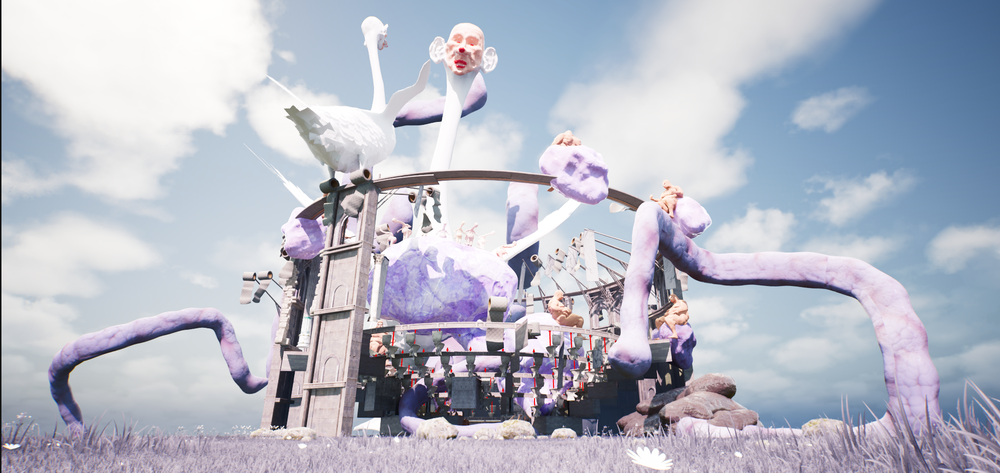
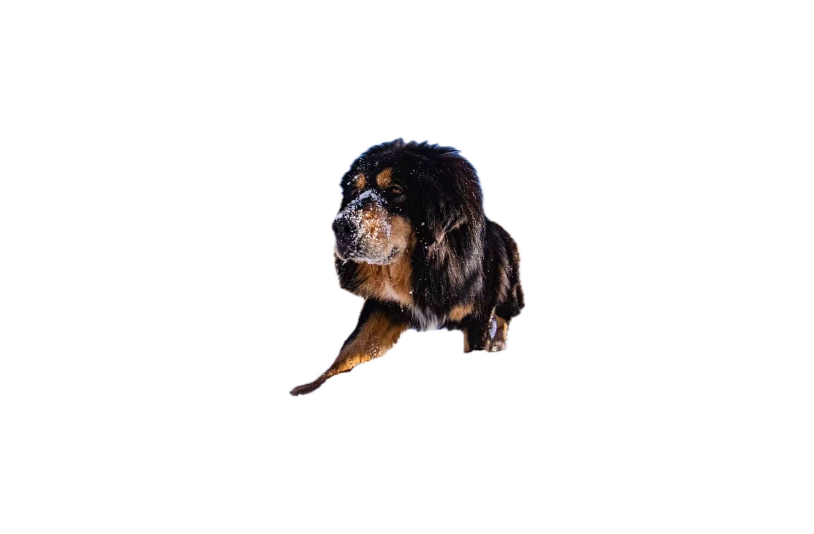
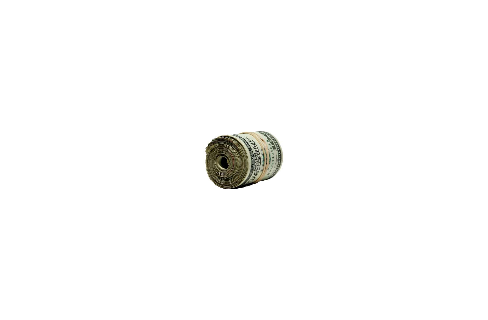

Produce
The player performs repetitive bodily actions.

A grotesque economy where bodily waste becomes the ultimate scarce resource.
一个关于稀缺、欲望与身体异化的虚拟经济系统。
What if the most intimate thing your body produces became a resource you could never own?
PoopSlaves is a gamified virtual experience that turns excretion into labour. Players produce value, yet every output is extracted, re-priced and accumulated elsewhere.
Absurdity makes a familiar economic logic visible: scarcity inflates desire, speculation detaches price from use, and the body becomes infrastructure.
The experience is built around a deliberate gap between agency of action and agency of outcome.
The player performs repetitive bodily actions.
Output leaves the body and enters the system.
Opaque rules recalculate its worth.
Value concentrates beyond the player’s reach.
From collectible toys to prestige breeds and speculative assets, desire rises when access is restricted and visibility is amplified.

Once traded as a million-RMB status object, the Tibetan Mastiff market collapsed when attention moved on.
A $350 collectible enters resale at $1,950. Restricted supply turns possession into performance.

Emotion creates demand; demand creates price; price validates the emotion. The loop feeds itself.
The player can produce, trigger and observe change—yet cannot recover value, redirect valuation or control accumulation.
Watch the prototype, final film, or the immersive CAVE presentation. Each version frames the same system from a different distance.
The original Figma composition remains available as a visual archive. The website reorganises it for reading, movement and multiple screen sizes.